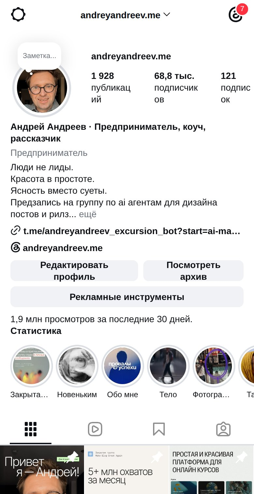
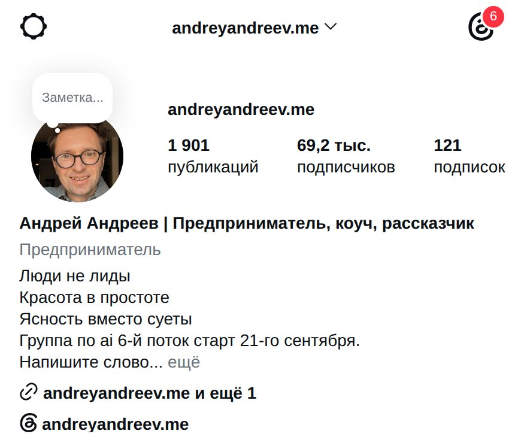
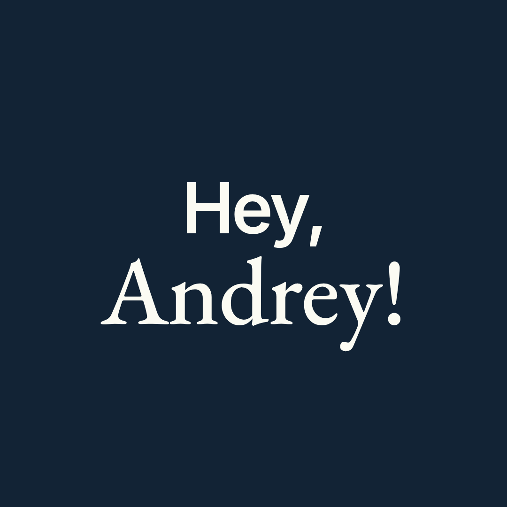
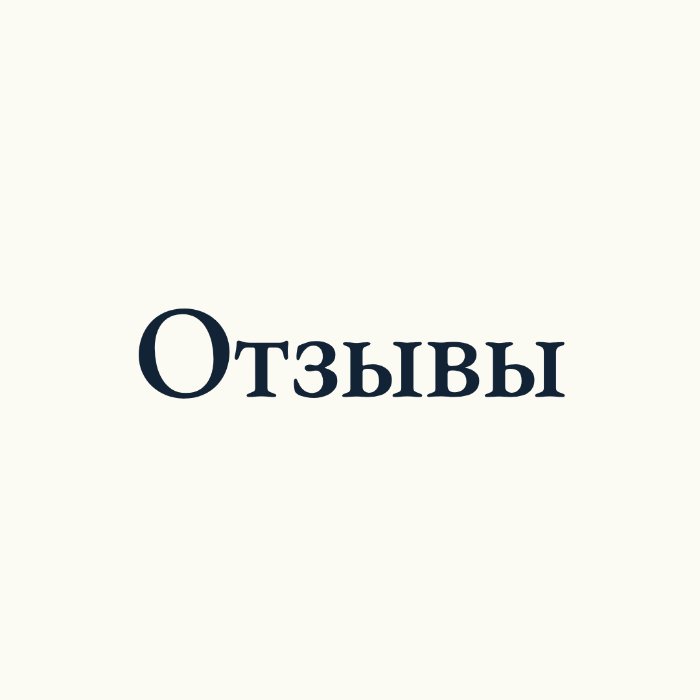
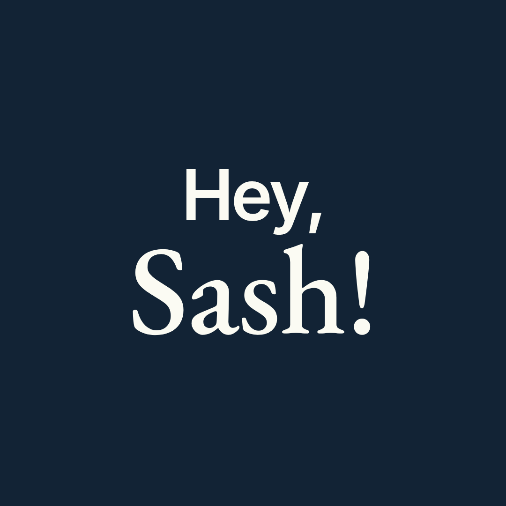
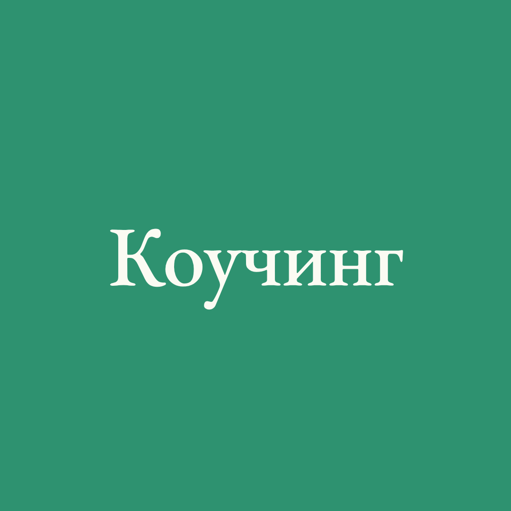
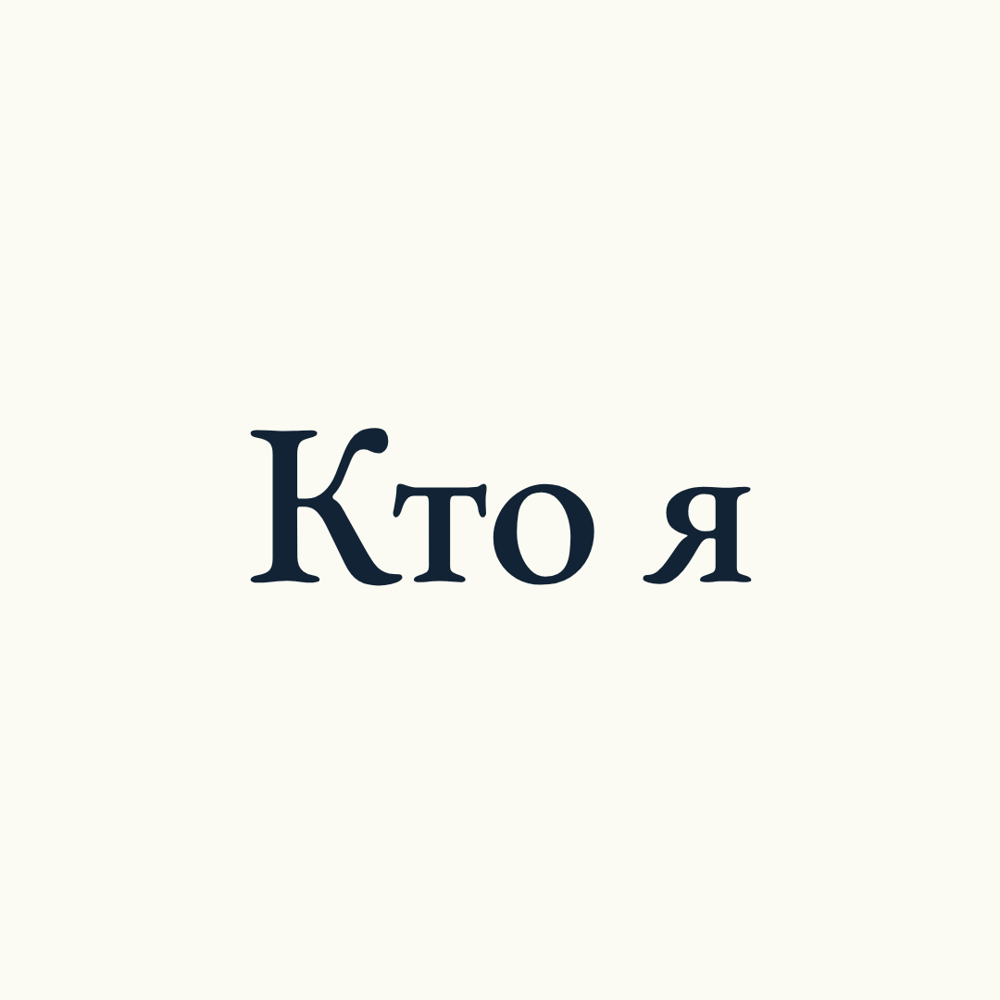
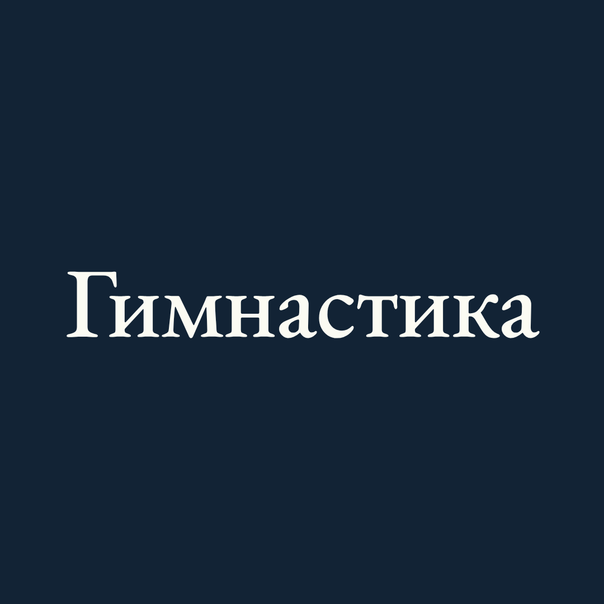

Выгрузка 17.09.2026, 14:40 МСК. Профиль, 150 публикаций с 25.07 по 17.09, инсайты по каждой, статистика за 30 и 90 дней, все восемь актуальных с датами, воронки из ChatPlace, сайт из Метрики. Где данных нет, так и написано.
охват по трём 30-дневным окнам
От июньско-июльского пика минус треть. Вовлечённых аккаунтов за те же окна: 125 361 → 57 531 → 55 360. Контента при этом стало больше.
Шапка: позиционирование остаётся ценностным, уход в «AI-агент монтирует ваш рилс» снят (раздел 01). Актуальные: старая линейка сносится, вместо неё шесть блоков с обложками и составом сторис: Hey, Andrey!, Отзывы, Hey Sash, Коучинг, Кто я, Гимнастика (раздел 02). Рекомендации 17.09, которые с этим спорят, помечены «снято 03.10». Цифры, лента и воронка — по-прежнему выгрузка 17.09.
Разбор говорит, что поменять. Кнопки делают это сами: берут твой профиль, снимают с ленты дизайн и собирают готовое. Обложки актуальных, следующий выпуск серии, которая залетела сильнее всех, и новую шапку.
демо-режим: результат собран заранее по профилю @andreyandreev.me на данных 17.09.2026, анимация показывает шаги, которые пройдёт живая генерация. Демо-хайлайты и демо-био собраны 26.09 по линейке и шапке 17.09; решения 03.10 — в разделах 01 и 02
«Мне нравится, что я с точки зрения ценности захожу, а не просто вот там покажу, как я монтирую ваши рилсы и так далее. Иначе я превращаюсь в обычного эксперта.»
Поэтому три варианта био от 17.09 со строкой «AI-агент монтирует ваш рилс за 30 минут» и словом МОНТАЖ как главным действием сняты. «Люди не лиды. Красота в простоте. Ясность вместо суеты.» остаются как есть. Продукты в профиле показывают актуальные (раздел 02), шапка про них не кричит.
Сверил с живым профилем 03.10: MBGA по имени в шапке не упоминается, переименовывать в «Hey, Andrey!» там нечего. Поле имени — «Андрей Андреев · Предприниматель, коуч, рассказчик», его тоже не трогаем.
Два факта со скрина ниже, без предложений нового текста. Четвёртая строка «Предзапись на группу по ai агентам для дизайна постов и рилз по слову «монтаж»» на телефоне переносится, и само слово «монтаж» уходит под «ещё». И закреп №2 в сетке до сих пор подписан «Закрытая группа Make Blog Great Again» — после переименования это старое название на самом видном месте профиля. Что делать с обоими, решаешь ты.


Оставлены для истории. 17.09 ты сказал: «пока непонятно до конца, что я продаю», и разбор предложил назвать продукт прямо в шапке. 03.10 решение другое.
«Курсы, коучинг, проекты» — это каталог. Под новый оффер первая ссылка ведёт на страницу агента и называется тем, что человек получит: «Агент монтирует рилс за 30 минут». Вторая ведёт в бот Hey Sash с меткой dl-1789460905270; куда она приземляет, я не проверял — пришлось бы входить в чужую воронку. Если это эфир 18.09, после эфира её надо заменить.
«Предприниматель» — самая общая из возможных. Под продукт ближе «Консультант» или «Цифровой создатель». Мелочь, но она стоит одного клика.
03.10 ты решил снести старую линейку целиком и оставить в актуальных только то, чем занимаешься сейчас: группу Hey, Andrey!, отзывы, Hey Sash и коучинг. Бывшая MBGA и сентябрьская группа с Настей — теперь один проект и один блок. После сдачи ты добавил ещё два личных: «Кто я» и «Гимнастика» (NBA 15844).

Hey, Andrey!
Отзывы
Hey Sash
Коучинг
Кто я
ГимнастикаСлева направо — от главного продукта к самому личному. Hey, Andrey! первым, потому что это основная работа. «Отзывы» сразу за ним: это доказательство к первому кружку, а не отдельная тема. Hey Sash — вход без группы, для тех, кому рано: приложение по подписке. Коучинг зелёным, как финальное приглашение в карусели OAH: им заканчивается продуктовая часть. Дальше два личных блока, их открывает тот, кто уже заинтересовался: «Кто я», а последней «Гимнастика», которая в конце возвращает к работе. Порядок от тебя оставил, менять не за чем. На скрине 03.10 при ширине 390 px видно пять кружков с лишним: пять первых на экране целиком, «Гимнастика» наполовину, её достают прокруткой.
Instagram ставит первым тот блок, в который последним добавили сторис. Поэтому собирать в обратном порядке: «Гимнастика», «Кто я», «Коучинг», Hey Sash, «Отзывы» и последним Hey, Andrey!. Если потом докинешь сторис, например, в «Гимнастику», она уедет в начало, и порядок придётся восстанавливать. Старые восемь блоков не удалять, а убрать в архив: сторис из них останутся у тебя. Обложки — квадрат 1080×1080, надпись в центральном круге ⌀780, при выборе обложки в Instagram ничего не обрежется.
Главный продукт, поэтому стоит первым. Внутри одна история: шесть потоков бывшей Make Blog Great Again и сентябрьская группа, которую ты вёл с Настей Фокиной. Блок отвечает на три вопроса нового человека: что это, что там получают и как попасть. Эмоции и благодарности вынесены в «Отзывы», здесь только то, что сделали руками.
сторис по порядку · кадр и текст · откуда материал
Стоит сразу за группой: человек открыл «Hey, Andrey!», понял, что это, и следующим кружком проверяет, работает ли. Подпись у каждой сторис одна и та же: «участница Hey, Andrey!» и поток (шестой или сентябрьская группа). Ни одна участница пока не давала согласия, ты писал, что спросишь сам. Без согласия этот блок не публикуется.
сторис по порядку · кадр и текст · откуда материал
согласие ни у кого не спрашивали · в сторис выше взяты первые семь строк и коллаж
| кто | цитата | участница | источник | согласие |
|---|---|---|---|---|
| Ольга Цой | «лучшее решение, которое я могла принять вообще за последние полтора года» | Hey, Andrey! · сентябрьская группа | зум 02.10, 10:36 · видео | нет · спросить |
| Даша Елисеева | «мой мир не будет прежним» | Hey, Andrey! · поток 6 | зум 02.10, 13:57 · видео | нет · спросить |
| kseni | «обязаловка» → «азарт… это прям творчество» | Hey, Andrey! · сентябрьская группа | зум 02.10, 03:33 · видео | нет · спросить |
| Лида Хлыстова | «в каком-то нереальном драйве» | Hey, Andrey! · поток 6 | зум 02.10, 10:31 · видео | нет · спросить |
| Катя Рязанова | «перекреститься только можно! Красота!» | Hey, Andrey! · поток 6 | зум 02.10, 07:11 · видео | нет · спросить |
| Катя Павлова | «Я настроила клода и кайфую!! Это нечто.» | Hey, Andrey! · поток 6 | чат П6 #32 | нет · спросить |
| Галина Железнякова | «…когда в космос наверное полетели)))» | Hey, Andrey! · сентябрьская группа | чат зума 25.09 | нет · спросить |
| Дана Smith | «поблагодарить тебя за твою гениальность и щедрость»; видео-отзыв с площадки | Hey, Andrey! · сентябрьская группа | чат #1170, видео #731 | нет · спросить |
| Ксения Алексеева | «Это лучшее из обучений, для меня это чудо!» | Hey, Andrey! · сентябрьская группа | чат #1211 | нет · спросить |
| Анастасия Мосина | «в 4-5 раз быстрее, чем с дизайнером» | Hey, Andrey! · сентябрьская группа | чат #1240 | нет · спросить |
| Маша Хёрд | «сгенерировал за 4 минуты… выверстывала 7 часов» | Hey, Andrey! · сентябрьская группа | чат #291 | нет · спросить |
| Софико | «впервые на обучении с такой эмпатией вообще» | Hey, Andrey! · сентябрьская группа | зум 25.09, 00:35 · видео | нет · спросить |
| Таня Stollen | «я понимаю, что я сама бы его собирала какое-то время» | Hey, Andrey! · сентябрьская группа | зум 25.09, 00:09 · видео | нет · спросить |
| Ксения (психолог) | «это быстро, это супер, я счастлива» | Hey, Andrey! · сентябрьская группа | зум 02.10, 24:38 | нет · спросить |
Третий кружок — вход без группы: кому рано в Hey, Andrey!, тот берёт приложение за подписку и делает карусели сам. В текстах «наше приложение», не «моё»: у Hey Sash три кофаундера. Записи экрана приложения у меня нет, это единственный материал, который надо снять.
сторис по порядку · кадр и текст · откуда материал
Последний и зелёный, как финальный слайд-приглашение в системе OAH. Это самый личный вход и самый близкий к шапке «Люди не лиды. Ясность вместо суеты.»: сюда приходят не за агентами, а за тем, что мешает. Все формулировки и цифры взяты с живой страницы andreyandreev.me/coaching/ на 03.10, ничего не добавлено.
сторис по порядку · кадр и текст · откуда материал
Пятый, после всех продуктов: сюда приходит тот, кто уже заинтересовался и хочет понять, кто за этим стоит. Основа — старый блок «Обо мне» (27 сторис, 31.08.2023): там уже есть провалы с суммами и «люди — не лиды». Цифры обновлены по живой странице /coaching/ и профилю 03.10. Сознательно не берём: детей и роды, жену, терапию, тантру — только ты и твоя работа.
сторис по порядку · кадр и текст · откуда материал
Последним, потому что это самое личное и при этом мостик обратно к работе: ролик, где AI-агент сам вырезал твои прыжки из видео с зала, ты одобрил как эталон (NBA 13991). Только твоя гимнастика, без Ясны. Старый блок «Тело» (17 сторис, 2022–2024) даёт историю «было», свежие ролики сентября — «стало». На телефоне шестой кружок виден наполовину, его достают прокруткой, для личного блока это нормально.
сторис по порядку · кадр и текст · откуда материал
Ты сказал «древние» — это мягко. Из восьми блоков семь не обновлялись больше года, шесть — больше двух лет. Половина всех сторис в актуальных (129 из 275) снята в 2019–2020 годах. Нажми на карточку — откроется контактный лист целиком.
порядок слева направо — маршрут нового человека; Instagram показывает на мобильном примерно шесть кружков
4–5 историй. Материал уже есть и лежит мёртвым: в «Закрытой группе» — кейс с 248к просмотров за неделю и кейс «смелость быть собой» (55к и миллион просмотров); в ленте — Даша Морозова («5 постов за 7,5 месяцев, потом 14 публикаций за 23 дня», охват поста 1 134) и Наташа @gde_moy_million (охват 5 038).
Схема сторис: было → что делали → что стало цифрой → скрин или реплика человека. Согласие спросить.
Убрать таблицу апрель-май-июнь. Поставить: что происходит по неделям, сколько длится, цена (в ChatPlace лежат кнопки на 14 900 и 19 900 ₽ — назови её словами прямо в сторис), когда ближайший старт, слово ЭКСКУРСИЯ.
Сегодняшние цифры, сегодняшний фокус, сегодняшние продукты, живые ссылки. И короче: 26 сторис никто не досматривает.
Заменить финальную сторис на актуальное действие. Добавить два кадра из «Тела» как доказательство метода маленьких шагов.
Один блок, который держит ценностную строку из шапки.
И общее по всем шести: обложки в одном стиле, одно слово на обложку. Сейчас у «Закрытой группы» обложка обрезается до «Закрыта…», у «Фотографии» — до «Фотогра…». Это верный признак, что название длиннее, чем помещается.
В ленту ушло 93 публикации: 79 каруселей, 13 рилсов, 1 фото. Плюс 57 пробных рилсов, которых на сетке нет. Топ-5 публикаций дали 39 % всего охвата ленты, топ-10 — 56 %. При этом 44 публикации из 93 набрали меньше 5 000 — это меньше 7 % собственной аудитории.
Цитатные карусели про людей и книги — 20 публикаций, медиана охвата 22 998, сохранений 334, репостов 167. Общее у всех: год, имя, профессия, конкретное событие в первой строке подписи.
| пост | охват | сохр. | комм. |
|---|---|---|---|
| 05.09 Рейчел Каск | 140 694 | 2 068 | 479 |
| 03.09 письмо в 2011 год | 121 551 | 2 611 | 258 |
| 25.08 Эндрю Соломон | 101 838 | 2 281 | 60 |
| 22.08 отец на конвейере | 58 170 | 2 071 | 48 |
| 01.08 эксперимент Лангер | 47 346 | 791 | 77 |
| 12.09 муми-тролли | 36 510 | 1 095 | 17 |
Продающие карусели, когда это история: 22.08 «Шестой поток» — 166 002 охвата и 1 437 комментариев; 26.07 «Пятый поток» — 119 441 и 1 147. Четыре таких поста дали 379 тысяч охвата и 3 190 комментариев.
Прямое приглашение в коучинг: 25.07 — 37 589 охвата, 1 725 сохранений. За 55 дней тема поднималась трижды.
Анонс эфира каруселью: 26.08 — 77 593 охвата, 2 162 репоста. На следующий день такой же анонс без карусельной истории — 10 055. Один и тот же эфир, разница в семь раз.
| тема | постов | охват | сохр. |
|---|---|---|---|
| Цитатные карусели | 20 | 22 998 | 334 |
| Коучинг | 3 | 14 068 | 213 |
| Личное и разное | 16 | 7 650 | 75 |
| AI, агенты, инструменты | 13 | 4 655 | 41 |
| Обучение блогу | 12 | 4 114 | 69 |
| Отчёты о статистике | 3 | 2 379 | 12 |
медианы охвата и сохранений по рубрикам
Шестой поток стартует 21.09, а в сентябре под него не вышло ни одной продающей карусели. Последний крупный пост под набор — 22.08: 166 002 охвата, 1 437 комментариев. После него 04.09 рилс с охватом 8 349 и 12.09 карусель с охватом 3 607. С 05.09 по 17.09 в ленте нет ни одного поста про набор, кроме одинаковых пробных рилсов.
В посте от 04.09 написано «Пятый поток закрытой группы по блогу стартует 21-го сентября». Шестой. Пятый стартовал 17 августа, и об этом есть пост от 26.07. В шапке профиля тоже написано «6-й поток».
Все публикации про AI-агента и монтаж рилсов за 55 дней: максимум 77 593 (анонс воркшопа), следующий 10 055, дальше 7 830, 7 676, 6 592. Рилсы с обложками «34 МИНУТЫ», «15 МИНУТ», «72 МИНУТЫ» — 6 711, 4 469, 3 103. Тринадцать постов на тему дали 137 150 охвата — меньше, чем одна карусель про Рейчел Каск.
С ритмом проблемы нет. Проблема с тем, что в ритм заливается.
Кодовое слово «экскурсия», с 26.07 по 17.09. Двадцать три поста собрали 481 058 охвата и 4 484 комментария. Дальше — по шагам из ChatPlace, накопительно за жизнь воронки.
23 поста со словом «экскурсия»
0,48 % от охвата; первое сообщение получили 2 324
61 % от тех, кто вошёл
69 %; в бот стартовали 1 350, открыли экскурсию 1 182
6 % от посмотревших видео
квиз прошли 21, «оплатить» нажали 18
Люди написали кодовое слово, получили в ответ проверку подписки и ушли. Тридцать девять процентов теряются до того, как им хоть что-то предложили.
Девяносто четыре процента тех, кто открыл видео-экскурсию, не сделали следующий шаг. Напоминание после видео получили только 301 из 938. Сентябрь: 540 новых людей в боте, 0 заявок. Все четыре заявки за жизнь воронки — до сентября.
снято 03.10Факт про триггеры — на 17.09. Схема «МОНТАЖ → бот → /montager/ → заявка» ниже была рекомендацией под монтаж как главный продукт; 03.10 ты решил не заходить через монтаж, поэтому как план она снята.
Проверены стартовые слова всех 41 автоматизации на четырёх ботах и все правила автоответов. Слов «монтаж», «монтажёр», «рилс», «reels» нет ни в одном триггере. Ближайшее — слово «АГЕНТ» (288 входов с 12.08), но оно ведёт в ту же экскурсию по группе, отдельного продукта за ним нет.
слово в комментариях или директе, без follow-gate
короткое видео «исходник → готовый рилс за 30 минут»
кнопка на /montager/
почта в предзапись
| страница | просмотров | заявок |
|---|---|---|
| /montager/ live с 16.09, noindex, не в меню | 5 | 0 |
| /ai-montage/ цена 9 900 ₽, live с 14.09, noindex | 0 | 0 |
| /ai-cases/ | 2 | — |
Цель montager_signup в Метрике не заведена, хотя код страницы её вызывает. Продукт, на который самый большой спрос, сейчас существует так: страница, на которую нельзя попасть, без цены, без воронки, без кодового слова, с нулём заявок.
Сайт целиком за 18.08–16.09: 1 956 визитов, из Instagram примерно 678 — треть всего трафика, из поиска 18 за месяц. Цель «Клик CTA Поговорить» — 9 срабатываний, «Клик на тариф» — 2.
1. Решить по согласиям: ни одна участница не давала его на цитаты и видео, без этого «Отзывы» не публикуются. 2. Ответить на жёлтые пометки «уточнить» в разделе 02: дата следующего потока, цена Hey Sash, цена и сопровождение в «Коучинге». 3. Снять две записи экрана (свой бот и Hey Sash) и видео-приветствие для «Кто я». 4. Собрать шесть блоков в обратном порядке, старые восемь — в архив. Пункты 17.09 ниже, которые спорят с решением 03.10, зачёркнуты.
Сегодня, за час
До старта 21.09
После 21.09
Цитатные карусели про людей и книги. 20 публикаций, медиана 22 998 охвата, 334 сохранения, 167 репостов. Это то, что держит аккаунт и приводит людей. Никаких правок, кроме одной: в конце такой карусели человеку некуда идти. В половине из них нет ни слова о том, кто ты и что делаешь.